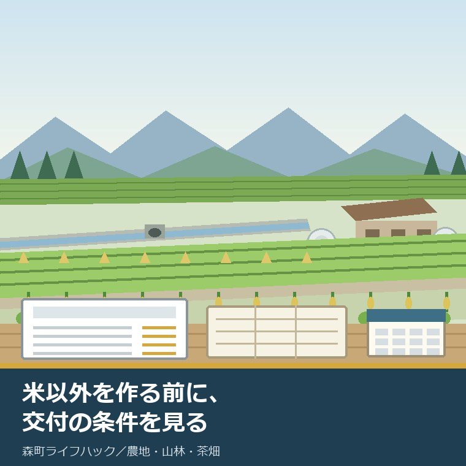
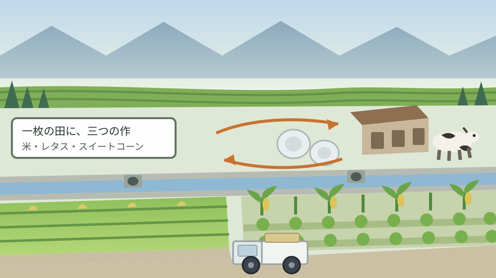
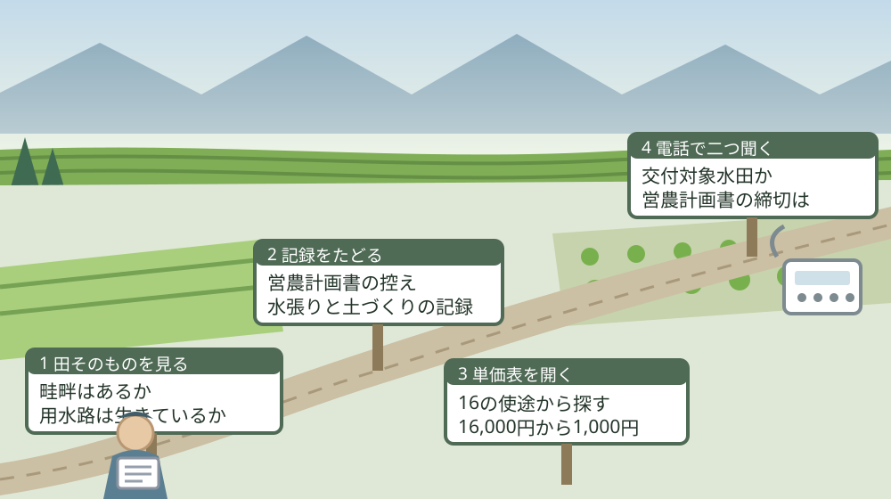

森町の田んぼで米以外を作る前に、産地交付金の条件を見る

この記事の要点
Q. 親から森町の田んぼを引き継ぎました。米を続けるか、別のものに変えるか決めきれません。転作すれば交付金は出ますか。
A. 出る作物と、出ない作物があります。令和8年度森町農業再生協議会水田収益力強化ビジョンによれば、森町の産地交付金は16の使途に分かれ、対象はWCS用稲、麦・大豆・飼料用米、スイートコーン、レタスです。単価は10アール当たり16,000円から1,000円まで開きます。作物を選ぶ前に、自分の田が交付対象水田かを確かめてください。
静岡県周智郡森町（遠州森町）の田んぼを、親から引き継いだ。米を続けるか、別のものに変えるか、まだ決めていない。この記事は、そういう方に向けて書いています。
決めきれないのは、当然だと私は思います。米の値段も、燃料代も、体力も、来年同じとは限らないからです。相談を受けていても、ここで即答できる方はまずいません。
ただ、転作を考えるときに順番を間違えやすい点が一つあります。「何を作るか」より先に、「その田んぼが交付の対象になるか」を見る必要があります。作付けを決めてから条件を知ると、戻せません。
2026年7月17日、森町公式サイトに「令和8年度水田収益力強化ビジョンについて」が掲載されました。森町農業再生協議会が作った、水田活用の設計図です。ここに、産地交付金の対象作物と単価が全部載っています。
この記事では、そのビジョンと農林水産省の資料から確定できることを並べ、森町の田んぼの実際の面積と重ねます。まだ決めていない段階でも、単価表を一度見ておく価値があります。
公式情報から確定できること
2026年8月20日時点で、森町公式サイトと農林水産省の公表資料から確認できた事実を並べます。出典は記事の末尾に載せています。
一つ目。公表の日付が確定しています。森町公式の「令和8年度水田収益力強化ビジョンについて」は2026年7月17日更新で、「令和8年度森町農業再生協議会水田収益力強化ビジョン」というPDF（570.4キロバイト）が掲載されています。担当は農政係、電話は0538-85-6315です。
二つ目。このビジョンが、交付の前提になります。同ページには「このビジョンに基づき、経営所得安定対策等における産地交付金の交付が行われます。」と書かれています。農林水産省も、水田収益力強化ビジョンの作成が産地交付金による支援の要件だとしています。
三つ目。森町の水田の面積が示されています。同ビジョンによれば、町内の水田は「約582ha（不作付地を含む）」で、この水田について「適地適作を基本として、産地交付金を有効に活用しながら、作物生産の維持及び拡大を図る」とされています。
四つ目。耕地に占める水田の割合も出ています。同ビジョンは「全耕地面積に占める水田の割合は、約54％で、基盤整備率が約90％」としています。整備は進んでいる、という前提で書かれた文書です。
五つ目。森町の作付体系は三毛作です。同ビジョンによれば、南部平地農村の園田・飯田地区を中心に「水稲＋レタス＋スイートコーン」の体系が取り入れられています。レタスは昭和33年に水稲裏作として導入され、昭和44年に国の指定産地になりました。
六つ目。スイートコーンは昭和62年からです。同ビジョンは、暗渠排水の整備と転作のブロックローテーション方式の導入を背景に、転作作物として昭和62年よりスイートコーンが導入されたとしています。麦＋大豆は平成13年より一宮地区の担い手農家を中心に作付けされてきました。
七つ目。課題も、町の文書に書いてあります。同ビジョンは「北部地域を中心として、農業従事者の高齢化、後継者不足及び小規模区画等の理由により不耕作地が増え、土地利用率が低くなりつつある。」とし、南部地域についても「転作田の集約が困難な状況にある。」と書いています。
八つ目。主食用米の面積は減る計画です。同ビジョンの作付予定面積によれば、主食用米は前年度実績428.48ヘクタール、当年度の作付予定407.51ヘクタール、令和8年度の目標400.00ヘクタールです。
九つ目。増やす計画の作物も明記されています。同じ表によれば、WCS用稲は前年度28.11ヘクタールから目標40.00ヘクタールへ、飼料用米は前年度0.00ヘクタールから目標10.00ヘクタールへ、高収益作物（野菜）は前年度156.16ヘクタールから目標195.00ヘクタールへ、と示されています。
十番目。レタスとスイートコーンの現況面積も出ています。同ビジョンによれば、水田裏作のレタスは一宮・園田・飯田地区を中心に約79ヘクタール、スイートコーンは同じ地区を中心に約77ヘクタールが作付けされています。
十一番目。ここからが単価の話です。同ビジョンの「産地交付金の活用方法の概要」には、16の使途が並んでいます。単価はすべて10アール当たりで、上は16,000円、下は1,000円です。
十二番目。最も高いのは16,000円の3つです。同表によれば、WCS用稲の耕畜連携助成（資源循環）、麦・大豆・飼料用米の担い手加算、麦・大豆の二毛作助成が、いずれも10アール当たり16,000円です。
十三番目。森町の看板作物は、その次に来ます。同表によれば、レタスの排水対策助成は基幹作・二毛作ともに10アール当たり12,000円、スイートコーンの流通コスト削減助成は基幹作・二毛作ともに10アール当たり11,000円です。
十四番目。残りの9つは、すべて1,000円です。同表によれば、WCS用稲の担い手加算と団地加算、麦・大豆の担い手加算（二毛作）と団地加算、麦・大豆・飼料用米の団地加算、スイートコーン・レタスの担い手加算と団地加算が、いずれも10アール当たり1,000円です。
十五番目。要件も一行ずつ書かれています。同表の「取組要件等」欄には、耕畜連携助成が「作付面積に応じて支援、利用供給協定締結等」、担い手加算が「作付面積に応じて支援、認定農業者等」、団地加算が「作付面積に応じて支援、団地形成等」と示されています。
十六番目。目標面積は、かなり強気です。同ビジョンの「課題解決に向けた取組及び目標」によれば、麦・大豆・飼料用米の担い手加算は令和7年度実績0.50ヘクタールに対し令和8年度目標25.00ヘクタール、麦・大豆・飼料用米の団地加算は令和7年度実績0ヘクタールに対し令和8年度目標11.20ヘクタールです。
十七番目。国の側の単価は、別枠です。農林水産省『経営所得安定対策等の概要（令和8年度版）』によれば、水田活用の直接支払交付金の戦略作物助成は麦・大豆・飼料作物が3.5万円/10a、加工用米が2.0万円/10a、WCS用稲が8.0万円/10a、飼料用米・米粉用米が収量に応じ5.5万円～10.5万円/10aです。
十八番目。産地交付金の設計ルールもあります。同資料によれば、助成内容は「地域における水田農業経営の課題に対応し、収益力向上に資する取組に対する助成とすること」「経営所得安定対策等の趣旨を損なうような助成としないこと」「主食用米、備蓄用米、不作付地への助成は行わないこと」に即して設定されます。
十九番目。水張りの扱いが変わりました。同資料は、食料・農業・農村基本計画（令和7年4月11日閣議決定）を引いて、水田活用の直接支払交付金を「作物ごとの生産性向上等への支援へと転換します。」とし、「このため、令和９年度以降、「５年水張りの要件」は求めません。」と書いています。
二十番目。令和7年・8年の扱いも書かれています。同資料によれば、現行の令和7年・8年の対応として、水稲を作付け可能な田について連作障害を回避する取組を行った場合、水張りしなくても交付対象とされます。具体例は、土壌改良資材・有機物（堆肥、もみ殻等を含む）の施用、土壌に係る薬剤の散布、後作緑肥の作付け、病害虫抵抗性品種の作付けなどです。
二十一番目。対象外になる農地も明示されています。同資料は「たん水設備（畦畔等）や用水路等を有しない農地、撤去が困難な園芸施設が設置されている農地は基本的には交付対象外」としています。ここは作物の話ではなく、田んぼそのものの話です。
二十二番目。記録の残し方まで示されています。農林水産省の令和8年産水田活用の直接支払交付金予算に係るQ&A（令和8年4月8日時点）は、連作障害を回避する取組の根拠資料として「農業者が作成する作業日誌、栽培管理記録簿等」や「購入伝票等」を保管し、地域農業再生協議会の求めに応じて提出できるようにしてください、としています。

この絵で描きたかったのは、産地交付金が「作物への補助」ではなく「回し方への補助」だという点です。二毛作、団地形成、耕畜連携。単価表に並ぶ名前は、どれも作り方の名前です。
森町の田んぼに置き換えると、この単価表は何を意味するか
ここからは、確認した事実を実際の田んぼに置き換えて考えます。私の見方が混じるので、事実と分けて読んでください。
まず、単価を自分の商売の感覚に翻訳します。10アールは1反です。10アール当たり16,000円という数字は、1反で16,000円、1ヘクタール（10反）で16万円ということになります。
ここに国の戦略作物助成が乗ります。WCS用稲を1ヘクタール作った場合、戦略作物助成8.0万円/10aで80万円、耕畜連携助成16,000円/10aで16万円。担い手加算と団地加算を各1,000円/10aで足すと、合わせてざっくり98万円という計算になります。
ただし、これは公表単価を機械的に足しただけの上限イメージです。利用供給協定の締結、認定農業者であること、団地を形成していることが、それぞれ別の要件として付いています。全部を満たせる方は、そう多くありません。
次に、面積の側を見ます。森町の水田は約582ヘクタール、主食用米の作付予定は407.51ヘクタールです。差し引き約175ヘクタールが、米以外か、作られていない田ということになります。
この約175ヘクタールのうち、レタス約79ヘクタールとスイートコーン約77ヘクタールが、南部の一宮・園田・飯田地区に集中しています。つまり森町の転作は、すでに地区が偏っています。
そして、ビジョン自身が「北部地域を中心として、農業従事者の高齢化、後継者不足及び小規模区画等の理由により不耕作地が増え」と書いています。北部の三倉・天方地区は、茶と山あいの小さな田の地帯です。
ここで、単価表をもう一度見ます。16の使途のうち、団地加算が4つ、担い手加算が5つを占めています。どちらも、まとまった面積と認定農業者であることを前提にした加算です。
小さな区画がとびとびに残っている田んぼで、団地加算を取るのは難しい。制度が悪いという話ではなく、この制度は集約が進んだ田を厚く支える形になっている、という話です。私はそう読みました。
良い点
森町農業再生協議会のこのビジョンについて、私が良いと考える点を三つ挙げます。順番に理由を書きます。
一つ目。単価と要件が、一枚の表で全部公開されていることです。16の使途それぞれに、対象作物、基幹作か二毛作か、10アール当たりの単価、取組要件が並んでいます。役場に行かなくても、自分の作付けが当てはまるかを机の上で当たれます。
二つ目。前年度の実績が併記されていることです。「課題解決に向けた取組及び目標」の欄は、令和7年度の実績面積と令和8年度の目標面積を並べています。目標だけを掲げた文書ではありません。実績が0.50ヘクタールなら0.50ヘクタールと書いてあります。
三つ目。課題を隠していないことです。高齢化、後継者不足、小規模区画、不耕作地の増加、転作田の集約の困難。これらが町の公式文書に書かれていることは、持ち主の側から見ると、話を切り出しやすくなります。私はこれを良い点として数えます。
付け加えると、レタスに排水対策助成、スイートコーンに流通コスト削減助成という名前が付いている点も、実務では効きます。森町の二つの看板作物について、何が弱点だと町が考えているかが、助成の名前から読めます。
注文したい点
その上で、一つの事業者として注文したい点も三つあります。批判ではなく、現場から見て足りないと感じる情報の話です。
一つ目。目標面積の飛び方に、担い手の裏付けが見えません。麦・大豆・飼料用米の担い手加算は令和7年度実績0.50ヘクタール、令和8年度目標25.00ヘクタールです。50倍です。誰が、どの地区で、この24.5ヘクタールを作るのか。私は公表資料から確認できませんでした。
二つ目。PDF1本しか置かれていないことです。森町公式のページには、掲載ファイルが「令和8年度森町農業再生協議会水田収益力強化ビジョン」の1本だけです。単価表はPDFの5枚目と6枚目にあります。そこまでたどり着ける方が何割いるか、私には見当がつきません。
三つ目。申請の時期と締切がページに書かれていません。産地交付金は営農計画書の提出を通じて動きますが、森町公式のこのページには、いつまでに何を出すのかの記載がありませんでした。単価が分かっても、締切が分からないと動けません。
加えて、これは注文というより私の迷いです。令和9年度から水田活用の直接支払交付金が作物ごとの支援へ転換されると、この16の使途がどうなるのか、私にはまだ見当がついていません。令和8年度の単価表を見て決めた作付けが、2年目にどう扱われるのか。ここは分からないまま書いています。

この図で示したかったのは、単価表を見るのが三番目だという点です。畦畔と用水路があるか。過去に何を作り、水を張ったか。この二つが先に決まっています。
対案・結論
では、今日できることを書きます。森町の田んぼを引き継いで迷っている方が、今日のうちに終えられる範囲に絞ります。
まず、営農計画書の控えを探してください。親が出していれば、筆ごとの地番と作付けが書かれています。見つからなければ、固定資産税の課税明細書で田の地番と面積を書き写します。
次に、その紙に「畦畔があるか」「用水路が生きているか」を筆ごとに書き込みます。農林水産省は、たん水設備や用水路等を有しない農地は基本的に交付対象外としています。ここで外れる田は、単価表を見ても意味がありません。
それから、令和7年と令和8年に何をしたかを思い出して書きます。水を張ったか。堆肥やもみ殻を入れたか。緑肥をまいたか。作業日誌や資材の購入伝票があれば、それも一緒にまとめておきます。
その上で、ビジョンを掲載している森町の農政係（電話0538-85-6315）へ電話をかけてください。聞くことは二つで十分です。「この地番の田は交付対象水田になりますか」と「営農計画書の締切はいつですか」です。
この電話が、今日できる小さな一歩です。作物名を先に言う必要はありません。対象水田かどうかと締切が分かれば、あとは冬の間に考えられます。
そして、結論は出さないでください。米を続けるか、WCS用稲に変えるか、貸すか、当面そのままにするか。今日の成果は、判断材料が一つ増えたことだけで十分です。貸す道を考える場合は、親が近所に貸している田んぼの契約書を確かめる記事に、先に見る項目をまとめてあります。
家族に残す記録
相談を受けていて、いちばん困るのは、田んぼの基本の情報が誰にも分からない状態です。地番も、水利も、誰が作っているかも分からないまま、名義だけが移っている。この形が、いちばん先へ進みません。
残す項目を挙げます。所在地、地番、地目、面積、水利組合の名前、用水路の系統、畦畔の有無、隣の田の持ち主。ここまでが1枚目です。
続いて、作付けの履歴を書きます。何年に何を作ったか。水を張ったのはいつか。連作障害を回避する取組をしたなら、その内容と資材。この一行が、交付対象水田かどうかの判断に直接効きます。
あわせて、手続きの状態を書きます。営農計画書を出しているか、認定農業者か、利用供給協定を結んでいるか、団地に入っているか。紙の名前と日付をそのまま書いてください。名義の整理そのものが済んでいない場合は、田んぼや畑を相続したときに登記の先へ進む記事から先に確かめてください。
最後に、今日の日付と、確認に使った資料の名前を書いてください。単価も要件も年度で変わります。いつ時点の話かが分かる記録だけが、来年も使えます。
大石の視点
ここからは、私の考えです。公表された事実とは分けて読んでください。
私は磐田市で小さな不動産の仕事をしていて、実家や農地をどうするか決めていない方の相談を一件ずつ受けています。森町の田んぼには、まだ十分に力があると思っています。基盤整備率が約90パーセントという数字は、簡単に出るものではありません。
同時に、このままでは続かないとも思っています。整備された田が残っていても、そこを回す人が地区にいなければ、単価表は紙のままです。担い手加算という名前の助成が5つもあること自体が、担い手が足りていないことの裏返しだと私は読みます。
今回のビジョンについて、私は反対ではありません。米以外に厚く配るという判断は、需要の現実に沿っています。ただ、厚く配る先が団地と認定農業者に寄っている分、小さな区画を持つ方が置いていかれます。
だから私は、この文書を「農家向けの制度説明」ではなく「持ち主の段取りの話」として読んでいます。作物を選ぶ前に、田そのものが対象かを見る。この順番を持ち主が知っているかどうかで、同じ田でも進み方が変わります。
ここには、私の商売の実感も混じっています。制度は知っている人だけが得をする。それが一番よくないと私は思っています。だからこの記事では、単価が1,000円の使途まで全部書きました。
作らない田を持ち続ける場合の負担は使っていない畑ほど獣の通り道になる記事に、田を農地以外にしたい場合の順番は農地を駐車場や宅地にする前に読む記事にまとめてあります。どちらも、転作と同じくらいよく聞かれる道です。
田だけでなく、実家の名義、境界、道路まで含めて順に整理したい方は、ふじがおか実家カルテの森町相談窓口もご利用ください。売ると決めていなくても使える整理の道具として作っています。
まとめ
- 森町公式の「令和8年度水田収益力強化ビジョンについて」は2026年7月17日更新で、PDF「令和8年度森町農業再生協議会水田収益力強化ビジョン」を掲載（2026年8月20日確認）
- 同ページによれば「このビジョンに基づき、経営所得安定対策等における産地交付金の交付が行われます。」
- 同ビジョンによれば、森町の水田は約582ヘクタール（不作付地を含む）、全耕地面積に占める水田の割合は約54パーセント、基盤整備率は約90パーセント
- 同ビジョンによれば、主食用米は前年度実績428.48ヘクタール、当年度予定407.51ヘクタール、令和8年度目標400.00ヘクタール
- 同ビジョンによれば、WCS用稲は目標40.00ヘクタール、飼料用米は前年度0.00から目標10.00ヘクタール、高収益作物（野菜）は目標195.00ヘクタール
- 同ビジョンによれば、レタスは約79ヘクタール、スイートコーンは約77ヘクタールが一宮・園田・飯田地区を中心に作付け
- 同ビジョンの産地交付金は16の使途に分かれ、単価は10アール当たり16,000円から1,000円
- 10アール当たり16,000円は、WCS用稲の耕畜連携助成（資源循環）、麦・大豆・飼料用米の担い手加算、麦・大豆の二毛作助成の3つ
- レタスの排水対策助成は10アール当たり12,000円、スイートコーンの流通コスト削減助成は10アール当たり11,000円（いずれも基幹作・二毛作とも）
- 麦・大豆・飼料用米の担い手加算は令和7年度実績0.50ヘクタール、令和8年度目標25.00ヘクタール
- 農林水産省によれば、戦略作物助成は麦・大豆・飼料作物3.5万円/10a、加工用米2.0万円/10a、WCS用稲8.0万円/10a、飼料用米・米粉用米は収量に応じ5.5万円～10.5万円/10a
- 農林水産省によれば、産地交付金は「主食用米、備蓄用米、不作付地への助成は行わないこと」等のルールに即して設定される
- 農林水産省によれば、令和9年度以降「５年水張りの要件」は求めず、水田活用の直接支払交付金は作物ごとの生産性向上等への支援へ転換される
- 農林水産省によれば、令和7年・8年は連作障害を回避する取組を行えば水張りなしでも交付対象、ただし畦畔や用水路等を有しない農地は基本的に交付対象外
- 農林水産省のQ&A（令和8年4月8日時点）によれば、根拠資料として作業日誌・栽培管理記録簿・購入伝票等を保管し協議会の求めに応じて提出する
よくある質問
Q1. 森町で米以外を作れば、必ず産地交付金がもらえますか。
A1. 令和8年度森町農業再生協議会水田収益力強化ビジョンによれば、森町の産地交付金は16の使途に分かれ、対象作物はWCS用稲、麦・大豆・飼料用米、スイートコーン、レタスです。それ以外の作物には単価が設定されていません。農林水産省も、主食用米・備蓄用米・不作付地への助成は行わないというルールを示しています。
Q2. 何年も水を張っていない田んぼは、交付の対象から外れますか。
A2. 農林水産省『経営所得安定対策等の概要（令和8年度版）』によれば、令和9年度以降「５年水張りの要件」は求めないとされています。令和7年・8年は、水稲を作付け可能な田で連作障害を回避する取組を行えば、水張りをしなくても交付対象です。ただし畦畔や用水路を持たない農地は基本的に対象外とされています。
Q3. 森町でいちばん高い産地交付金の単価はいくらですか。
A3. 同ビジョンの「産地交付金の活用方法の概要」によれば、最も高いのは10アール当たり16,000円で、WCS用稲の耕畜連携助成（資源循環）、麦・大豆・飼料用米の担い手加算、麦・大豆の二毛作助成の3つです。レタスの排水対策助成は12,000円、スイートコーンの流通コスト削減助成は11,000円です。
最後に一つだけ。ここに書いた面積、単価、要件、目標は、いずれも2026年8月20日時点で公表されている内容です。営農計画書の提出期限、産地交付金の令和8年度の実際の配分額、特定の地番が交付対象水田に当たるかどうか、令和9年度以降にこの16の使途がどう組み替えられるかは、公表資料からは確認できていません。動く前に、必ずビジョンを掲載している森町の農政係（電話0538-85-6315）へご確認ください。
参考にした公式情報
- 令和8年度水田収益力強化ビジョンについて／静岡県森町（森町農業再生協議会が令和8年度における水田活用の取組方針を記載した「水田収益力強化ビジョン」を策定し公表していること、「このビジョンに基づき、経営所得安定対策等における産地交付金の交付が行われます。」と書かれていること、掲載ファイルが「令和8年度森町農業再生協議会水田収益力強化ビジョン」（PDFファイル 570.4KB）1本であること、担当が農政係（電話0538-85-6315）であることを2026年8月20日に確認。更新日 2026年07月17日）
- 令和8年度森町農業再生協議会水田収益力強化ビジョン（PDF）／静岡県森町（町内の水田が「約582ha（不作付地を含む）」であること、「全耕地面積に占める水田の割合は、約54％で、基盤整備率が約90％」であること、昭和33年より水稲裏作としてレタスが導入され昭和44年に国の指定産地となったこと、昭和62年よりスイートコーンが導入され「水稲＋レタス＋スイートコーン」の作付け体系が取り入れられていること、平成13年より一宮地区の担い手農家を中心に麦＋大豆が作付けされたこと、「北部地域を中心として、農業従事者の高齢化、後継者不足及び小規模区画等の理由により不耕作地が増え、土地利用率が低くなりつつある。」「転作田の集約が困難な状況にある。」と書かれていること、レタスが約79ha、スイートコーンが約77ha作付けされていること、主食用米の前年度作付面積が428.48ha・当年度の作付予定面積が407.51ha・令和8年度の作付目標面積が400.00haであること、WCS用稲が28.11ha→40.00ha→40.00ha、飼料用米が0.00ha→0.00ha→10.00ha、高収益作物（野菜）が156.16ha→181.00ha→195.00haであること、「産地交付金の活用方法の概要」に16の使途が並び、耕畜連携助成（資源循環・WCS）・担い手加算（麦・大豆・飼料用米）・二毛作助成（麦・大豆）が16,000円/10a、排水対策助成（レタス、基幹作・二毛作）が12,000円/10a、流通コスト削減助成（スイートコーン、基幹作・二毛作）が11,000円/10a、その他9つが1,000円/10aであること、取組要件等に「利用供給協定締結等」「認定農業者等」「団地形成等」と記載されていること、「課題解決に向けた取組及び目標」で麦・大豆・飼料用米の担い手加算が令和7年度0.50ha→令和8年度25.00ha、同団地加算が0ha→11.20ha、レタス排水対策助成（二毛作）が70.01ha→92.00haとされていることを2026年8月20日に確認）
- 経営所得安定対策／農林水産省（『経営所得安定対策等の概要（令和8年度版）』が掲載されていること、水田活用の直接支払交付金の戦略作物助成が麦・大豆・飼料作物3.5万円/10a（多年生牧草で収穫のみ行う年は1万円/10a）、加工用米2.0万円/10a、WCS用稲8.0万円/10a、飼料用米・米粉用米が収量に応じ5.5万円～10.5万円/10aであること、令和8年度予算概算決定額が2,612億円であること、産地交付金が「水田収益力強化ビジョン」に基づき国から都道府県、都道府県から地域農業再生協議会へ資金枠が配分される仕組みであること、助成内容の設定ルールに「主食用米、備蓄用米、不作付地への助成は行わないこと」が含まれること、そば・なたね・新市場開拓用米・地力増進作物の作付け（基幹作のみ）への配分単価が2万円/10a、新市場開拓用米の複数年契約が1万円/10aであること、食料・農業・農村基本計画（令和7年4月11日閣議決定）を引いて「令和９年度以降、「５年水張りの要件」は求めません。」とされ、令和7年・8年は連作障害を回避する取組を行えば水張りなしでも交付対象とされること、たん水設備（畦畔等）や用水路等を有しない農地・撤去が困難な園芸施設が設置されている農地は基本的には交付対象外とされることを2026年8月20日に確認）
- 水田活用の直接支払交付金／農林水産省（水田収益力強化ビジョンが地域の特色のある魅力的な産品の産地を創造するための地域の作物生産の設計図であり、その作成が産地交付金による支援の要件となること、令和8年産水田活用の直接支払交付金予算に係るQ&A（令和8年4月8日時点）が掲載されていること、同Q&Aが令和9年度以降「水張りルール」は求めていないとし、令和7年度・8年度は連作障害を回避する取組を行えば水張りをしなくとも交付対象となるとしていること、連作障害を回避する取組の根拠資料として「農業者が作成する作業日誌、栽培管理記録簿等」や「購入伝票等」を保管し地域農業再生協議会の求めに応じて提出できるようにするとされていること、水張りを行う場合の確認はたん水期間中に1か月以上あけて2回実施し一区画ごとに行うとされていることを2026年8月20日に確認）
- 森町「人・農地プラン」について／静岡県森町（「人・農地プラン」が高齢化や後継者不足といった課題に対応するため集落・地域が一体となって策定する地域農業の将来設計図であり、耕作放棄地や農地集積の課題を整理して「地域の中心的経営体」を位置づけるものであること、実質化された人・農地プランとして天竜川下流用水一宮地区・草ヶ谷開墾組合地区・向天方地区の3地区が掲載されていること、担当が農政係（電話0538-85-6315）であることを2026年8月20日に確認。更新日 2023年03月31日）

最終確認日：2026-08-20 ／ 本記事は公表情報と執筆者の見解を分けて記載しています。営農計画書の提出期限、令和8年度の産地交付金の実際の配分額、特定の地番が交付対象水田に当たるかどうか、令和9年度以降の使途の組み替えは公表資料から確認できていません。個別の田の取扱いは森町農業再生協議会および静岡県の判断によります。動く前に、必ず農政係（電話0538-85-6315）へご確認ください。